한국사능력검정시험-초급(폐지) (2011-08-13 기출문제)
1. 다음 마인드맵의 (가)에 들어갈 주제어로 적절한 것은? [2점]
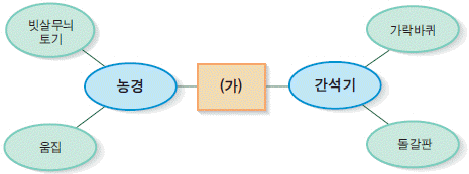
- 구석기 시대
- 신석기 시대
- 청동기 시대
- 철기 시대
(정답률: 87%)

2. 다음 유물을 통해 알 수 있는 당시 사회상으로 옳은 것은? [3점]
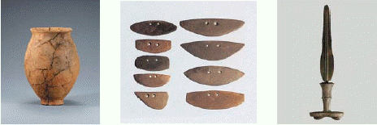
- 사냥에 뗀석기를 사용하였다.
- 처음으로 토기를 사용하였다.
- 돌로 만든 농기구를 사용하였다.
- 지배자와 피지배자가 구분되지 않았다.
(정답률: 71%)
3. (가) ~ (다)는 삼국의 전성기 지도이다. 지도와 왕이 옳게 짝지어진 것은? [2점]
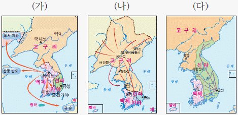
- 근초고왕 장수왕 진흥왕
- 장수왕 근초고왕 진흥왕
- 장수왕 진흥왕 근초고왕
- 진흥왕 장수왕 근초고왕
(정답률: 91%)
4. 지수는 고구려에 관한 보고서를 쓰려고 한다. 보고서에 넣을 사진으로 적절하지 않은 것은? [2점]
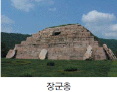
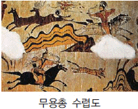
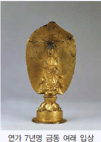
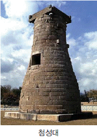
(정답률: 94%)
5. 다음 유적과 관련된 인물로 옳은 것은? [3점]
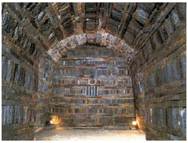
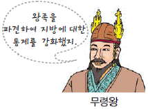
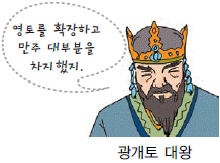
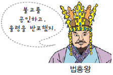
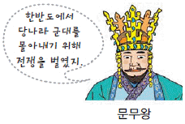
(정답률: 64%)
6. 다음 지도를 통해 알 수 있는 시대의 사실로 옳지 않은 것은? [3점]
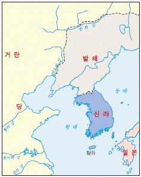
- 김춘추는 당으로 건너가 나·당 연합을 이끌어 냈다.
- 신라와 당의 교역이 활발해지면서 당에 신라방이 생겼다.
- 발해는 일본과의 교역을 중시하여 여러 차례 사절을 보냈다.
- 장보고는 청해진을 설치하여 서·남해의 해상권을 장악하였다.
(정답률: 63%)
7. 다음은 유적 답사에서 찍은 사진기 화면이다. 이 유적이 있는 지역에 대한 설명으로 옳은 것은? [2점]
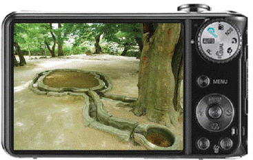
- 백제의 마지막 수도이다.
- 대조영이 발해를 건국한 곳이다.
- 지산동 고분군이 있는 대가야의 중심지이다.
- 김대성이 세운 불국사가 있는 곳으로 유명하다.
(정답률: 40%)
8. (가)에 들어갈 신문 기사 제목으로 가장 적절한 것은? [3점]
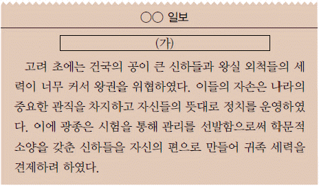
- 팔관회! 성대하게 열리다.
- 배경보다 실력으로! 과거제를 실시하다.
- 지방 통제 강화! 12목에 지방관을 파견하다.
- 노비안검법 실시! 억울한 노비의 수가 줄어들다.
(정답률: 50%)
9. 고려의 경제생활에 관한 책을 만들고자 한다. 책에 들어갈 제목과 내용이 옳은 것은? [3점]
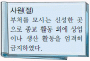
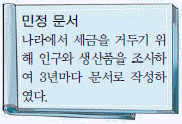
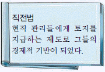
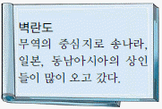
(정답률: 63%)
10. 고려 전기 생활 모습을 나타낸 것 중 적절하지 않은 것은? [3점]
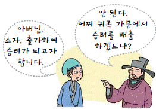
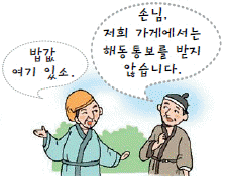
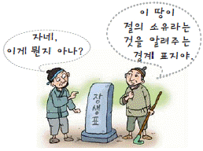
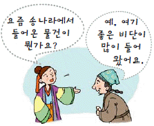
(정답률: 30%)
11. (가)의 검색어에 해당하는 이들의 활동과 관련하여 답사할 유적지로 옳은 것은? [3점]
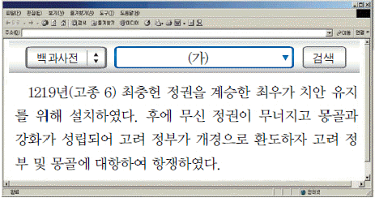
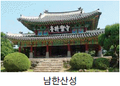
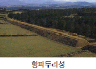
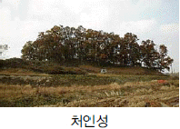
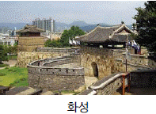
(정답률: 21%)
12. 다음 내용과 관련 있는 인물로 옳은 것은? [3점]
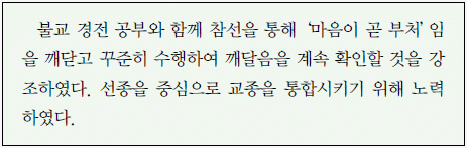
- 의천
- 지눌
- 혜초
- 의상
(정답률: 52%)
13. 다음은 서울 지하철 노선도이다. (가)~(라) 역 주변의 문화유산과 관련된 내용으로 옳은 것은? [2점]
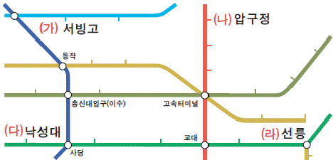
- (가) - 지방에서 거둔 세곡을 보관하던 창고이다.
- (나) - 황희가 벼슬에서 물러나 여생을 보내던 곳이다.
- (다) - 강감찬 장군이 태어난 곳이다.
- (라) - 태종의 무덤이 있는 곳이다.
(정답률: 43%)
14. 다음 책이 만들어진 시기의 백성에게 부과된 세금과 의무에 관한 설명 중 옳지 않은 것은? [3점]
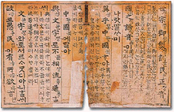
- 상민 남자는 성곽과 도로 공사 등에 동원되었다.
- 평안도에서 거둔 세금은 현지에서 국방비로 사용하였다.
- 지방에서 거둔 세금은 바다를 통해 개경으로 운반하였다.
- 지역의 토산물을 집집마다 나누어 내도록 하는 제도가 있었다.
(정답률: 28%)
15. 조선 전기 양반에 대한 설명으로 옳지 않은 것은? [3점]
- 유교를 숭상하여 충효를 중시하였다.
- 자기 땅의 농사는 노비와 소작농에게 맡겼다.
- 과거를 통해 관리가 되어 나랏일에 참여하였다.
- 나라의 허가를 받은 시전에서 주로 활동하였다.
(정답률: 50%)
16. 다음과 같은 문제점을 해결하는 방법과 관련 있는 제도로 옳은 것은? [3점]
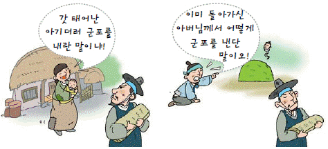
- 대동법
- 균역법
- 환곡제
- 영정법
(정답률: 46%)
17. 선생님의 설명 중 (가)에 들어갈 수 있는 것으로 옳지 않은 것은? [3점]
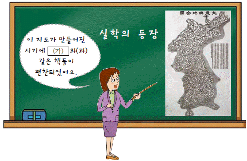
- 「택리지」
- 「동사강목」
- 「동국여지승람」
- 「훈민정음운해」
(정답률: 57%)
18. 다음 글이 쓰여진 시기에 활동한 인물로 옳지 않은 것은? [2점]
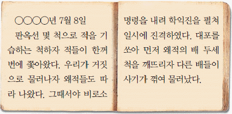
- 유성룡
- 곽재우
- 이종무
- 사명 대사
(정답률: 39%)
19. 밑줄 그은‘민화’에 해당하지 않는 것은? [2점]
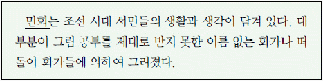
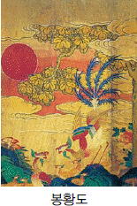
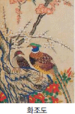
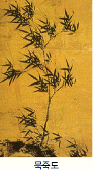
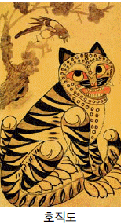
(정답률: 39%)
20. 다음 건축물들이 지어진 시기에 나타난 사실이 아닌 것은? [2점]
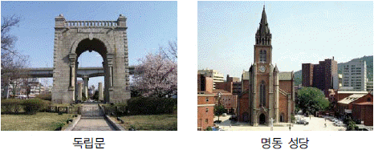
- 원구단을 만들었다.
- 궁궐에 전등이 설치되었다.
- 한글로 된 근대 신문이 발간되었다.
- 청나라에서 천주교가 처음 전래되었다.
(정답률: 62%)
21. 다음 자료와 관계 깊은 경제적 민족 운동으로 옳은 것은? [2점]
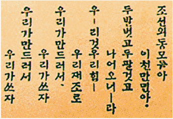
- 새마을 운동
- 물산 장려 운동
- 금모으기 운동
- 국채 보상 운동
(정답률: 80%)
22. 홈페이지 비밀번호 힌트가 다음과 같을 때 비밀번호 힌트와 관련된 사건으로 옳은 것은? [2점]
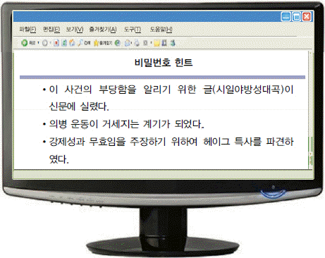
- 을미사변
- 을사조약
- 갑오개혁
- 강화도 조약
(정답률: 72%)
23. 다음 가상 광고 전단지의 (가)에 들어갈 말로 옳은 것은? [2점]
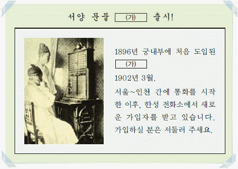
- 철마
- 묘화
- 덕률풍
- 쇠귀신
(정답률: 34%)
24. 다음 신문 기사와 관련된 민족 운동에 대한 설명으로 옳지 않은 것은? [2점]
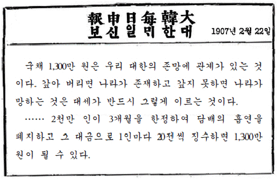
- 국민 모금을 통해 나라의 빚을 갚고자 하는 운동이 었다.
- 성금은 비녀와 반지 같은 패물을 팔고 담배를 끊어 마련하였다.
- 황성신문, 제국신문 등 다양한 신문의 후원을 받아 홍보가 이루어졌다.
- 평양에서 시작된 운동으로, 민족 기업 육성을 통해 경제 자립을 이루고자 하였다.
(정답률: 46%)
25. 다음 역사책의 106~108쪽에서 볼수 있는 내용으로 옳은 것은? [2점]
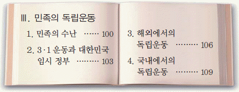
- 청ㆍ일 전쟁
- 6.25 전쟁
- 동학 농민 운동
- 이봉창 의사 의거
(정답률: 75%)
26. 인터넷에 다음과 같은 질문을 했을 때 예상되는 답변으로 옳지 않은 것은? [3점]
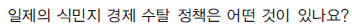
- 방곡령
- 회사령
- 산미 증식 계획
- 토지 조사 사업
(정답률: 50%)
27. 인물 스티커를 붙이는 게임이다. 다음 스티커를 붙일 곳으로 옳은 것은? [3점]
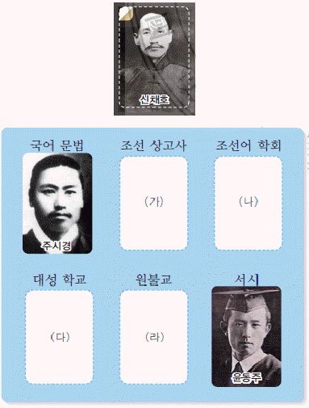
- (가)
- (나)
- (다)
- (라)
(정답률: 36%)
28. 다음 역사 신문의 (가)에 실을 수 있는 기사로 적절한 것은? [2점]
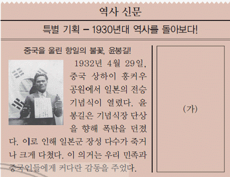
- 갑신정변
- 3.1 운동
- 청산리 대첩
- 브나로드 운동
(정답률: 38%)
29. 유리가 선생님께 이메일로 보고서를 보낼 때 첨부 파일로 옳지 않은 것은? [2점]
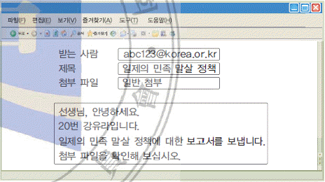
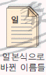
(정답률: 54%)
30. 국립 중앙 박물관에서 열기고 있는 다음 특별전과 관련된 역사적 사건으로 옳은 것은? [2점]
- 병인양요
- 신미양요
- 임오군란
- 윤요호 사건
(정답률: 61%)
31. 다음 보고서 목차를 시기순으로 정할 때 두 번째 사건으로 옳은 것은? [3점]
- (가)
- (나)
- (다)
- (라)
(정답률: 19%)
32. 대통령 인물 카드를 제시하면 그 대통령 때 있었던 사건 카드를 제시하는 놀이이다. 다음 카드를 제시했을 때 내야 할 카드로 옳은 것은? [2점]
(정답률: 87%)
33. 다음 사건 파일을 아래 폴더에 정리할 때 파일 개수가 가장 많은 폴더는? [3점]
(정답률: 33%)
34. 밑줄 그은 부분에 해당하는 문화유산으로 옳은 것은? [2점]
(정답률: 77%)
35. 서울에 있는 문화유산을 오래된 시대순으로 답사할 때 세 번째 들러야 할 곳은? [3점]
- 성균관
- 덕수궁 석조전
- 석촌동 돌무지무덤
- 암사동 선사 유적지
(정답률: 68%)
36. 탐구 계획서를 작성할 때 탐구 활동으로 옳지 않은 것은? [3점]
- (가)
- (나)
- (다)
- (라)
(정답률: 67%)
37. 다음 홈페이지의 (가)를 검색하여 찾을 수 있는 정보로 옳지 않은 것은? [2점]
- 참성단
- 광성보
- 해인사
- 고려궁지
(정답률: 36%)
38. 연대순으로 역사 드라마를 배열할 때 (가)에 들어갈 수 있는 작품 내용을 옳게 설명한 학생은? [3점]
- 지수 : 후삼국을 통일한 태조 왕건을 다루는 것이 좋겠습니다.
- 유연 : 백범 김구의 독립운동에 대한 내용이 좋다고 생각합니다.
- 현준 : 고구려를 건국한 주몽을 내용으로 하는 것이 좋겠습니다.
- 두승 : 황산벌 전투를 지휘한 계백의 일대기를 다루는 것이 좋겠습니다.
(정답률: 81%)
39. 다음은 역사적 인물이 지휘했던 전투를 연결하는 사다리 게임이다. 연결이 옳지 않은 것은? [2점]
- ①
- ②
- ③
- ④
(정답률: 64%)
40. 간행된 시기를 기준으로 책을 분류할 때 책꽂이에 옳게 놓인 책은? [3점]
- (가)
- (나)
- (다)
- (라)
(정답률: 31%)